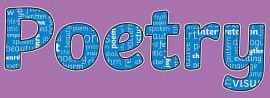
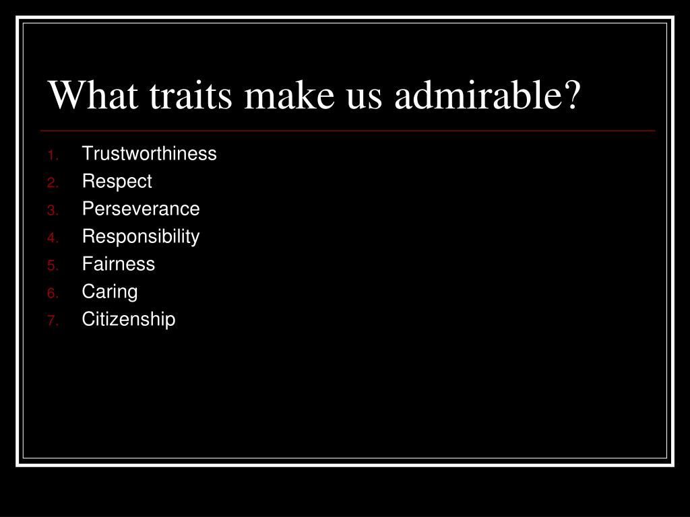
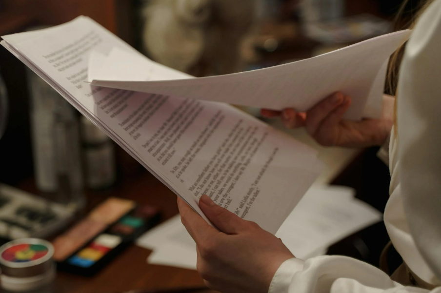
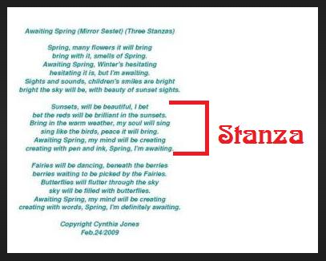

Supporting file: 02_SUPPORTING_FILES_BY_UNIT/03 - Unit 2 Analyzing Shorter Texts/Talking to Text-e281dc0238.pdf
Original package path: сontent/ida749555-6374-48c9-9f66-b6d02a2f0bad/Annotating Text.pdf
The following information will assist you with being prepared to read short stories.
A short story is a brief tale written to entertain you and keep you turning the pages to find how it ends. Reading a short story is like taking a trip to a new place inhabited by people you have never met. Short-story authors write to tell you their ideas about people and the world. By sharing the lives of fictional characters, you gain insights into human nature and behaviour. You may also learn something about yourself.

A short-story writer quickly pulls you into the lives of the characters and makes you care about their feelings, their relationships, and their problems. Every detail and event in a short story is carefully chosen by the writer to contribute to the overall effect. Here are some o the elements used in writing a short story.
Believable, interesting characters that you care about are at the heart of a good short story. Be alert to how the main characters grow and change through the events in the story.
The setting is the tine and place in which the story takes place, The setting often tells you something about the characters and helps to create the atmosphere or mood.
Challenges, conflict, or struggle are the basis of every story. Characters may struggle with other people, with animals, with forces of nature or with something inside themselves.
Every story is told from a particular point of view. It may be told from the point of view of one character in the story, or from the point of view of a narrator who knows and sees everything.
The plot is the chain of events in a story. Many stories follow a pattern: the author establishes the characters the setting and the conflict, and then adds complications. The climax is the turning point of the story where the conflict is resolved and the loose ends are tied up.
Suspense is what makes you worry about the characters and what will become of them. A life-threatening situation, for example, makes for a suspenseful story.
The theme is the main idea in a story. It is what the story has to say about life and human nature. Keep in mind that different readers may interpret the same story in quite different ways.
Here are some strategies you can use to get the most from reading a short story.
Here are some strategies you can use to get the most from reading a short story.
Before you begin to read a story, take some time to get ready.
The key to being a good reader is being an active reader. Here are some of the things you can do to be an active reader.
Making notes can help you focus your thinking as you read. Here are some ways of writing about a story.
You have previously learned that the plot is one of the key elements of a short story. The plot is the backbone of a story. It’s the sequence of events that unfold, driving the narrative forward.
A strong plot will have a clear beginning, middle, and end. Most stories focus on creating a narrative arc that builds tension and leads to a satisfying resolution. A plot diagram can be used to visualize the rise and fall of action, ensuring a story has a satisfying arc.
Authors and scriptwriters use the following clues to tell you about characters in stories and dramas.
However, sometimes characters don't say exactly what they mean, and you have to interpret their words and actions. For example, in "Ride to the Hill,' Pauline doesn't come right out and say what she thinks of her father, but you can guess, or infer, Pauline's feelings from what she does say.
You can also figure out what a character feels or thinks by remembering your own experiences. Ask yourself:
Interpreting the words and actions of characters can make reading stories and dramas far more interesting.
Two excellent sources of clues to help you understand or interpret a character's words and actions are your personal experience and what the character says and does.
When you first read a story, you don't know much about the characters yet. However, you can make some guesses about them based on what you know about people and what you would do if you were in the characters' shoes.
You can learn a lot about a character by what they reveal about themselves through what they say and do.
The following speeches and stage directions reveal something about a particular character named Pauline.
• "And when you try to ride him in the morning, he bucks." (page 44)
• "He [my father] says I'm making a fool of myself ... because I've grown too big for him ... and we look so funny together that people ... " (page 46)
• "I'm sorry if you have to take a horse that you don't want." (page 46)
• "He knows all about me. All my secrets." (page 46)
• "Maybe there aren't as many [people], but the ones who are here can hurt you just as much." (page 49)
• Pauline smiles a gentle, forgiving smile, and hands him [Martin] the lead. (page 49)
What do these quotations reveal about how Pauline feels about herself and about her relationships with other people?
A good way to organize your thoughts about a character is to make a web. Below is a partial web for the character Pauline, using some quotations from the script she is in. Words are then added to the web to describe the character trait each quotation demonstrates.

Stuck for words to describe characters? Try one of the following:

How can characters be influenced? First, let's review some key background information about characters before you start into reading some short stories.
When reading text ask yourself:

Flat Character: Minor character who does not undergo substantial change or growth in the course of a story.
Round Character: Major character who encounters conflict and is changed by it
Static Character: Minor character who undergoes little or no inner change.
Stock/Stereotype Character: Characters who behave in a predictable way. These characters all behave in the same way, they aren’t individuals. For example: the “jock,” the “nerd.”
A struggle between opposing characters or forces is considered the conflict.
Conflict is the basis of every story. It occurs when characters experience problems. We keep reading because we want to find out how the problems will be solved. Conflict can be serious, or light-hearted and humorous.
There are two basic kinds of conflict in literature: external conflict and internal conflict.
External conflict is the struggle between a character and something outside of him or her for example:
Internal conflict is a struggle that takes place with a person. This struggle usually involves making choices:
The writer establishes character, or personality, through words and actions. A successful writer will cause the reader to understand characters’ feelings in various situations. A character’s responses to conflicting situations, such as anger in one scene and tolerance in another, require the reader to determine which trait dominates within a person. A single action does not determine a trait, but it adds to an impression of a certain trait.
Identifying traits is often difficult. General descriptions such as “He cannot wait to obtain all the facts before he does something he later regrets” are not traits. A precise word is needed. “He is impulsive” identifies the trait that must be supported with details later. Because you are expanding your vocabulary continuously, the word bank on the previous page may be helpful.
(this link opens in a new window/tab)
Authors create suspense in their writing using several techniques. What does it mean for something to be suspenseful? What is suspense? Watch the following video that will give you an overview of what suspense means and the elements of suspense.
In this unit you will be reading several short stories. Remember that you will need to demonstrate active reading by submitting your annotations for each short story as part of the Unit 2 Assignment.
If you would like some assistance when you annotate your readings, please let your teacher know.
(this link opens in a new window/tab)
Supporting file: 02_SUPPORTING_FILES_BY_UNIT/03 - Unit 2 Analyzing Shorter Texts/Talking to Text-e281dc0238.pdf
Original package path: сontent/ida749555-6374-48c9-9f66-b6d02a2f0bad/Annotating Text.pdf
Supporting file: 02_SUPPORTING_FILES_BY_UNIT/03 - Unit 2 Analyzing Shorter Texts/How to Annotate Tips-1b67021324.pdf
Original package path: сontent/ibcb1d312-b920-4e50-a5c8-ca01055c6eab/Annotation w Bookmark.pdf

Keeping track of your thoughts about a story allows you to connect with what you are reading. It makes your reading process an active one rather than a passive one.
You may write about the characters or the plot or the quality of writing in a story. But it's not enough to say for example that a character reminds you of someone you know. You need to support your opinions with details and quotations from the story. This is the reason for responding to questions using the Four Part Response that you learned about in Unit 1.
Put yourself in the shoes of one of the characters. Here are some questions to ask during and after reading:
Here are some ideas to help you keep track of what happened in the story (the plot).
You can assess the strengths and weaknesses of how the story is written. Some questions to consider:
When responding to a story, any question should be answered using the Four Part Response format. This ensures you are responding in a way that your reader will be able to understand and follow your thinking.
If you are not given specific questions to respond to, consider the following to ensure your response is thorough:
When answering questions, students are sometimes prone to answer as many questions as they can in the shortest amount of time. This can lead to vague, unsupported answers that do not give the Reader much information to go from.
In this section, we will work to create fully-developed, comprehensive responses that include:
- Using evidence from your text
- Explaining why the evidence answers the question
- Showing a personal connection
Responses that are carefully constructed provide more insight to the Reader. This will allow you to express your true understanding of the text.
The four part response uses the following format:
Q - What did Hagrid get Harry for his birthday?
A - Hagrid purchased Harry an owl for his birthday while they were shopping on Diagon Alley.
Take note how the question has been integrated into the first sentence of our response. The reader will not need to read the question on its own to understand what the writer is talking about.
Use embedded quotations or summarize proof from the book followed by page numbers.
Q - In Harry Potter and the Chamber of Secrets, how was the Dursley's dinner party ruined?
A - The Dursley's dinner party was ruined when Dobby came to warn Harry not to return to Hogwarts and performed a number of bad acts/incidents which Harry was blamed for. "'Then Dobby must do it, sir, for Harry Potter's own good.' The pudding fell to the floor with a heart-stopping crash. Cream splattered the windows and walls as the dish shattered. With a crack like a whip, Dobby vanished." (pg. 20)
Notice that the quote that has been used as evidence of understanding has helped support the writer's previous statement. Dobby's visit/disturbance was the reason that the Dursley's dinner party had been ruined and the quote supports that description.
For example, you may choose one or more of the following sentence starters:
· This means that…,
· This tells us that…,
· This proves that…,
· From this we know…,
· Now we understand that…
*You need to interpret/explain the evidence that you chose. Re-stating the quote IS NOT an interpretation.
An example of an incorrect response would be: “The sky turned red,” tells us the sky is red.
An example of a correct response would be: “The sky turn[s] red,” tells us that the morning had arrived and the long night of waiting was finally over.
“The night my great uncle was in the hospital, the sun came up in the morning and I, too, felt like everything was going to be okay.”
"Just like Harry, I have also been blamed for things that I did not do. Sometimes it was a sibling or a friend who's actions got me in trouble."
Question: Why don't most people have weapons like Katniss's bow?
Answer: Most people in District 12 do not have weapons like Katniss' bow for three reasons. The first reason is because "enclosing all of District 12 is a high chain link fence topped with barbed wire loops" (p. 4) and "it's supposed to be electrified...as a deterrent to ...predators" (p. 4). This tells us that people in District 12 are protected from any wild animals "that used to threaten [the] streets" (p. 4). A second reason that people in District 12 don't have weapons is because "trespassing in the woods is illegal and poaching carries the severest of penalties" (p. 5) proving that people are not willing to have weapons for fear of punishment. Finally, Katniss' bow "is a rarity, crafted by [her] father" (p. 5) letting us know that people aren't able to have such weapons because they are not craftsmen that are able to make such a particular device. Weapons being so uncommon in District 12 serves to show us that Katniss is special and has skills and a commodity that others around her do not.
Remember to use this format when you are responding to any questions that require you to interpret what you have read or what you have observed. This will be the expectation for the remainder of this course. If you choose to not use this format in your responses, this may lead to having your work returned to you and you having to re-submit your work in the proper format.
You are now ready to move on to the next section.
(this link opens in a new window/tab)
Supporting file: 02_SUPPORTING_FILES_BY_UNIT/03 - Unit 2 Analyzing Shorter Texts/Four Part Response Outline-c792477223.docx
Original package path: сontent/i4595cc6d-9d4f-48ed-9e4e-dc9683e4d378/Four Part Response outline.docx
Imagine a world without books, televisions, radios or computers. How could people share their knowledge, and record their history? What would they do to pass the time - especially during the long evening hours? How would they entertain themselves and each other? The answer to these questions is obvious: they would tell stories.
You will be given a selection of short stories. Some of the stories will have accompanying videos, others will be narrated for you, and others need to be read by you. After listening, reading, and viewing the short stories, you will be required to answer a series of questions based on the stories. Remember you must use the Four Part Response Format when responding to the questions.
The short stories you will be exploring are the following:
Imagine that you are walking down the street. Suddenly a young boy passes by and steals your wallet or purse. How would you feel? What would you do?

Langston Hughes (1902-1967) is one of the most famous African American writers. In addition to short stories, he also wrote poetry, newspaper columns, plays and novels. His parents were divorced when he was very young and he was mostly raised by his grandmother, who taught him to be proud of being African American. As a writer, he wrote mostly about what life was like for black people in America.

Read the text on the next page - remember to make annotations where you feel they are appropriate. If you do not know how to download the document and mark up the document in pdf format, ask your teacher to print you a copy. You are required to submit your annotations as part of your assignment for this unit.
Supporting file: 02_SUPPORTING_FILES_BY_UNIT/03 - Unit 2 Analyzing Shorter Texts/Thank You, Maam By Langston Hughes-eb0c67ff23.pdf
Original package path: сontent/i10f367b6-4c89-4124-a190-b27883ceb547/Thank You, Ma’am By Langston Hughes.pdf
READ the short story The Novitiate by Jean Howarth available on the next page.

Remember to make annotations where you feel they are appropriate. If you do not know how to download the document and mark up the document in pdf format, ask your teacher to print you a copy. You are required to submit your annotations as part of your assignment for this unit.
Supporting file: 02_SUPPORTING_FILES_BY_UNIT/03 - Unit 2 Analyzing Shorter Texts/The Novitiate by Jean Howarth-52a8900e8c.pdf
Original package path: сontent/i7a1cf89e-59b9-41f5-b900-2c3220cc4d98/The Novitiate by Jean Howarth.pdf
Why do we have different seasons in the year? The myth of Persephone attempts to explain one of nature's mysteries.

READ the written text of the myth of Persephone on the next page.
Remember to make annotations where you feel they are appropriate. If you do not know how to download the document and mark up the document in pdf format, ask your teacher to print you a copy. You are required to submit your annotations as part of your assignment submission for this unit.
You may also link on the attached audio and LISTEN to the myth. Persephone.MP3
WATCH the myth of Persephone.
Supporting file: 02_SUPPORTING_FILES_BY_UNIT/03 - Unit 2 Analyzing Shorter Texts/Persephone - A Greek Myth retold by Ann Pi-9300e332e7.pdf
Original package path: сontent/i9460d0ca-96c6-4bb0-a0cd-042abd4bdf30/Persephone - A Greek Myth retold by Ann Pilling.pdf
READ the short story On the Sidewalk Bleeding by Evan Hunter on the next page.
Remember to make annotations where you feel they are appropriate. If you do not know how to download the document and mark up the document in pdf format, ask your teacher to print you a copy. You are required to submit your annotations as part of your assignment submission for this unit.

You may also choose to LISTEN to the story as you follow along with the text. You can find the audio file by clicking here --> On the Sidewalk Bleeding by Evan Hunter.MP3
When you are finished reading or listening to On the Sidewalk Bleeding by Evan Hunter, please WATCH the following video to experience the story in another medium.
Supporting file: 02_SUPPORTING_FILES_BY_UNIT/03 - Unit 2 Analyzing Shorter Texts/On the Sidewalk Bleeding by Evan Hunter-e82cd65b13.pdf
Original package path: сontent/i1b5c4803-ae73-4c4e-8cf4-1db98b70a5cb/onthesidewalkbleeding - Copy.pdf

A poem is a concise verbal snapshot of a poet's thoughts. Poems work through the images they paint, the sounds they create, and the ideas they communicate.
You need to read a poem more than once - and at least one time out loud, so you can hear the sounds and the rhythms. Close your eyes and try to see the pictures painted by the words. Try to share the poet's feelings and perceptions. Then ask yourself, "What does this poem say to me?"
Poets combine sounds, images, and shapes to make a unique creating in words that communicate with you, the reader.
Poetry needs to be read aloud. As you read, listen for words that rhyme and for a rhythm you can tap your fingers to, like music. Listen for words that imitate sounds you hear around you in real life. And listen for the letter sounds that repeat. All these sounds add to the effect of a poem.
As you read poetry, let the poet's words paint pictures in your mind. Poets use sensory images to appeal to sight, hearing, taste, smell, and touch. Poets often use comparisons that give you new ways of looking at familiar things.
Pay attention to how the poet has placed the words on the page. A new stanza or verse may signal a change of focus or of tone. The poet may repeat lines or words to emphasize important ideas.

Think of reading a poem as having a conversation with the poet. The poet is saying what's on their mind and you're listening. But don't just sit there - get involved! Ask questions. Make comments. Express your feelings. Give your opinions. Share your experiences. The following are some strategies for reading poetry. When you read a poem, choose a strategy that suits the poem and your purpose for reading it. Always check to see if there are any similarities between yourself and the speaker, and similarities between people you know and the characters in the poem. This can help you connect to the poem in a deeper way.
Before you start to read a poem, look it over. Find out how long it is, if it is divided into stanzas, or if it has an unusual shape. Read the title and think about what it suggests to you. Scan the poem for words that catch your attention.
Writers use a range of techniques and devices to create the effects they’re after. Some of these devices are used principally by poets, whereas others are common to writers of both prose and poetry.
You can have experience only through your five senses: you can see, hear, feel, taste, and smell. When writers want to share their experiences, they try to appeal to the senses by describing how something looks, sounds, feels, tastes, or smells. Sensory details are the specific words that appeal to your senses to support the dominant impression of a description.
An image is a word picture that is created by using vivid sensory details. Writing that creates images in the minds of readers is said to contain imagery. When writers use imagery, their words make you feel as though you can see, smell, touch, hear, or even taste what they’re describing. Here are examples of writing that appeals to each sense:
Sight: sparkling diamond
Hearing: shrieking siren
Taste: salty, buttered popcorn
Smell: rotten eggs
Touch: slimy slug
It’s easy to see that imagery uses colourful, specific words to create a picture in the reader’s mind. Sensory details must be very specific words in order to create effective images. The sentence, “The dog made a noise,” doesn’t give the reader a very clear picture. However, the sentence, “The panting, struggling German shepherd whimpered in his agony,” creates a more effective image. Not only do you see and hear the dog, but you also get the impression of suffering.
Here are two statements that say approximately the same thing:
Try to do great things .
Hitch your wagon to a star.
Although both statements have the same meaning, one is more interesting than the other. The first one makes a straightforward statement; it uses literal language. The second example, on the other hand, encourages you to use your imagination to create a special image. It uses figurative language.
Figurative language is effective because it adds vividness to a description. It also gives concreteness, beauty, and humour to words and ideas. Figurative language contributes to the mood or theme of a poem or passage.
Figures of speech are some of the tools a writer uses to create imagery. For example, “rough as sandpaper” very effectively appeals to the sense of touch. “Diamond-studded sky” creates a visual image more effectively than the phrase “many stars in the sky.”
Four common figures of speech are similes, metaphors, personification, and hyperbole.
The Simile
A good way to increase the effectiveness of a word picture or image is to compare an object or person to something else. This comparison can be a forceful tool in both writing and speaking. A simile is a comparison introduced by the word like or as.
The frisky puppy was as wiggly as an eel.
Leaves drifted in the gentle wind like tiny parachutes.
Notice that in these examples the two things compared in each sentence are unlike in most ways, but appear to be alike in one important aspect. This unusual comparison is what makes a simile striking.
The Metaphor
A metaphor is another type of comparison that’s used frequently in prose and poetry. A metaphor, like a simile, makes a comparison, but it doesn’t use the words like or as.
On their shining tracks, the waiting diesel engines were crouching cats, purring softly.
The ripe pumpkins were golden idols among the corn stalks.
In these examples, one thing is described as if it were something else. The diesel engines were purring cats, and the pumpkins were golden idols.
Once you can recognize metaphors in poetry and prose, you’ll be able to appreciate their effectiveness in language. Sometimes a writer uses a metaphorical comparison over an entire poem or written work. This extended metaphor is often easier to recognize because it is developed over the entire piece of writing, and it then becomes more obvious. In the next example, the author compares clouds to several things:
I remember once, as a kid, lying on my back watching clouds. Row upon row of factory-perfect models drifted along the assembly line. There went a nifty schooner, flag flying — and look, a snapping toy poodle with the most absurd cut! Next came chilly Greenland, with Labrador much too close for comfort. But the banana split was the best one of all.
Personification
Personification is the giving of human characteristics, powers, or feelings to something non-human. Personification is really a type of metaphor in which the comparison is always made to a human being:
The telephone poles marched along the highway as far as the eye could see .
The waters of the brook chuckled as they passed us on their way.
In the first of these examples, the telephone poles are being compared to soldiers as they march, standing straight and evenly spaced, along the road. In the second example, the waters in the brook are compared to chuckling, happy people — children perhaps.
Hyperbole
Hyperbole is an extravagant exaggeration, usually used for comic or dramatic effect:
The story would burn your ears off if I told you.
The story wouldn’t really burn off your ears, but this exaggeration helps to emphasize what’s being said. Hyperbole is intentional exaggeration used to emphasize an idea.
Here are two more examples of hyperbole — ones you’ve probably heard many times:
It was so funny I split my sides laughing.
I simply died of embarrassment.
Irony
Irony has a wide range of meanings. At its simplest, irony is a form of expression that implies something different or even opposite to what is actually said, as in this example:
So you broke your arm the day of the big game! That's just great.
Irony of this sort, when a person says the opposite of what he or she means, is called verbal irony.
Another kind of irony occurs when something turns out in an opposite way to what is expected. Suppose that a team has played splendidly all year but, in the final game, plays very badly and suffers a humiliating defeat. This strange twist, which often occurs with events, is called irony of situation.
In literature, the meaning of a set of circumstances often isn’t revealed until the outcome of the circumstances is seen; then a contradiction in the expected outcome is the result. The situation may seem to be developing to its logical conclusion, yet almost at the end it takes an opposite turn. This unexpected, or unintended, development is an example of irony of situation.
In the short story, “The Gift of the Magi,” by O. Henry, Della sells her beautiful long hair in order to buy her husband, Jim, a watch chain. Meanwhile, Jim pawns his cherished watch to buy Della a present of hair combs. This ironic twist of fate produces a conclusion that, to both characters and readers, is entirely unexpected.
Satire
Satire is a form of writing in which the writer criticizes or ridicules something, such as society, institutions, politics, religion, or education. However, it isn’t direct criticism. Satire often describes a completely different situation, but makes indirect parallels and references to things you know so that you realize what the writer is criticizing.
In one very famous satirical work, the writer Jonathan Swift wrote an essay in which he suggested that the poor people of his country should sell their children to the rich as a source of food. Of course, his point was to criticize his society, in which some people lived in such grinding poverty that they found it very difficult to feed and clothe themselves and their children, whereas others in society had much more than they needed and refused to share their wealth. In his satirical essay. Swift suggested that since the rich were taking everything else from the poor anyway, they might as well take their children. Readers who missed Swift’s satire were horrified by his proposal.
Very often writers use satire to achieve humour in their writing. In fact, to be effective, satire must be humorous; it should have sharpness, but it shouldn’t be bitter and caustic. It scores its point without causing hurt. Good satire is often subtle, sometimes so subtle that some people misunderstand it.
Symbolism
A symbol is something that stands for something else. It can be a word, a person, an action, or an object that takes on a meaning far beyond its ordinary meaning. For example, the dove and the olive branch are symbols of peace. The fist is a symbol of aggression.
A symbol is more than a sign. A sign brings to mind a single meaning; a symbol brings to mind a more complex idea that signals both mind and emotion. For example, the Canadian maple leaf is a symbol; it represents a cluster of ideas, attitudes, and feelings.
A literary symbol is an object, a situation, or an action that has a literal meaning within a story or poem, but suggests other meanings as well. For example, darkness might symbolize ignorance or depression, while dawn might mean a new beginning.
Don’t fall into the trap, however, of assuming that a literary symbol must always mean the same thing. For example, the Sun often symbolizes life, but a writer might use it as a symbol of power or dominance or something entirely different. Always let the story or poem itself alert you to what a symbol means.
Allusion
An allusion is an indirect reference to something or someone generally familiar. Many allusions are to historical or mythological figures. For example, “He’s as old as Methuselah” is an allusion to a man who’s said to have lived 969 years. Of course, if the reader doesn’t know of Methuselah, the allusion is meaningless. The allusion then becomes a barrier to communication.
If writers want to get their message across to readers, they must be aware of possible barriers and write specifically for a group of readers. Readers, on the other hand, must also be aware of these barriers and take steps to remove as many as possible. The more you read and learn, the more allusions you’ll be able to recognize. You can also use a dictionary to help you discover the meaning of many allusions.
Flashback
Flashback is a common technique for revealing something important that happened in the past. The readers or viewers, typically, are involved in the present action when suddenly the writer takes them back to the past for a while. This return to the past is sometimes done as a memory.
An author may signal a flashback in different ways. Occasionally, an author will leave additional space between the part of the story in the current time and the flashback. Some authors change the font to emphasize a flashback.
Most of the time, an author signals a flashback with words. A verb tense shift from the present to the past tense may be used:
I remember the night so clearly. I had gone upstairs to change for the party. Suddenly, I heard a scream outside my window....
Foreshadowing
Foreshadowing occurs when the author gives hints or clues about what’s going to happen. Sometimes the hints are so subtle that you may miss them until the event has occurred. Upon rereading the story, however, you’ll find foreshadowing more obvious. This technique adds interest and suspense as you wait for what you’re subtly warned about to happen:
As I walked past the graveyard that foggy night, I felt that someone was watching me. Yet, when I turned around, no one was there .
I should have known that Marco could not be trusted.
Although these examples are somewhat obvious, not all foreshadowing is this simple. A writer will often leave subtle clues for the reader: a particular brand of cough drops, a peculiar habit, a way of speaking, an odd noise, a strange glance. It takes a discerning reader to become aware of these hints.
Alliteration
Alliteration is the repeated use of an initial consonant sound in two or more words in close proximity (the same line or nearby lines). This sound device contributes to the melody of the writing. Writers often use alliteration to gain attention, to bind phrases together, or to create a musical effect.
In this line by Edgar Allan Poe from his poem “The Bells,” the t sound is emphasized:
What a tale of terror, now, their turbulency tells!
Here’s another example of alliteration from Tennyson’s “The Eagle”:
He clasps the crag with crooked hands;
Onomatopoeia
Onomatopoeia or imitative harmony is the use of words whose sound suggests their meaning:
When Alfred Noyes wanted to show the sound of a horse in his poem “The Highwayman,” he used the following words:
Over the cobbles he clattered and clashed in the dark inn-yard
Later in the poem, Noyes uses onomatopoeia again:
Tlot-tlot; tlot-tlot! Had they heard it? The horse-hoofs ringing clear;
Sometimes a poem will use an entire line or even a stanza of imitative words to convey a special effect, as in these lines from Shakespeare’s Macbeth:
Double, double, toil and trouble;
Fire burn, and cauldron bubble.
Repetition
Poets, along with other writers, frequently repeat words or phrases to emphasize them or to create a rhythmic effect. Here’s an example from the poem “The Highwayman” by Alfred Noyes:
And the highwayman came riding —
Riding — riding —
The highwayman came riding, up to the old inn-door.
If you like music and song lyrics...you actually do like or perhaps even love poetry, but you may not have known this! Music and songs are extremely powerful and reach a world wide audience. Movies include music and song all the time to support the messages intended for the viewers. Music and song are used in many different mediums. So if you love songs, you love poetry!
View and listen to this short YouTube video as a "warm up" for reading and analyzing song lyrics. How many of the contemporary songs and artists do you recognize? You will most likely be surprised how often you may hear figurative language without realizing it. Song lyrics use figurative language all the time!
As a child, you were probably first introduced to heroism through fictional characters from comic books or cartoons. Superheroes, like Batman and Robin, the Power Rangers, and Spiderman, dive into danger to protect the innocent and defeat evil. However, when these superheroes are disguised as ordinary citizens, they are unknown. Only when they draw on their superpowers to perform extraordinary feats do they gain status and respect.
Brad Roberts, the lead vocalist of the rock band Crash Test Dummies, wrote the following song - “Superman’s Song”. Listen to the song and review the song lyrics below before completing the chart and questions in your assignment.
Tarzan wasn’t a ladies’ man
He’d just come along and scoop ‘em up under his arm
Like that, quick as a cat in the jungle
But Clark Kent, now there was a real gent
He would not be caught sittin’ around in no
Junglescape, dumb as an ape doing nothing
Superman never made any money
For saving the world from Solomon Grundy
And sometimes I despair the world will never see
Another man like him
Hey Bob. Supe had a straight job
Even though he could have smashed through any bank
In the united States, he had the strength, but he would not
Folks said his family were all dead
Their planet crumbled but Superman, he forced himself
To carry on, forget Krypton, and keep going
Tarzan was king of the jungle and Lord over all the apes
But he could hardly string together four words: “I Tarzan. You Jane.”
Sometimes when Supe was stopping crimes
I’ll bet that we was tempted to just quit and turn his back
On man, join Tarzan in the forest
But he stayed in the city, and kept on changing clothes
In dirty old phonebooths till his work was through
And nothing to do but go on home.

Have you ever been given a poem to read and your first response after reading it is, "I don't know what it means!" In order to help you understand poems, you can use a poetry analysis method called: TP-CASTT.

Although you are possibly groaning at the thought of analyzing poetry, using TP-CASTT will help you breakdown, and understand, poems that often appear to be extremely difficult. Once you understand a poem, it will the be much easier to respond to it.
TP-CASTT is a acronym for:
- examine the title again but this time on an interpretive level
- Briefly state in your own words what the poem is about (subject) then what the poem is saying about the subject (theme)
Beautifully Janet slept
Till it was deeply morning. She woke then
And thought about her dainty-feathered hen,
To see how it had kept.
One kiss she gave her mother,
Only a small one gave she to her daddy
Who would have kissed each curl of his shining baby;
No kiss at all for her brother.
“Old Chucky, Old Chucky!” she cried,
Running on little pink feet upon the grass
To Chucky’s house, and listening. But alas,
Her Chucky had died.
It was a transmogrifying bee
Came droning down on Chucky’s old bald head
And sat and put the poison. It scarcely bled,
But how exceedingly
And purply did the knot
Swell with the venom and communicate
Its rigour! Now the poor comb stood up straight
But Chucky did not.
So there was Janet
Kneeling on the wet grass, crying her brown hen
(Translated far beyond the daughters of men)
To rise and walk upon it.
And weeping fast as she had breath
Janet implored us, “Wake her from her sleep!”
And would not be instructed in how deep
Was the forgetful kingdom of death.
Using TP-CASTT, analyze the poem.
Poems to Read
The poem below is called a free-verse poem. A free-verse poem is one that is not concerned about rhyme or rhythm. The poet is free to concentrate on their ideas and feelings.

The following poem focuses on the power of memory.

And finally, we will end with a sonnet.
A sonnet is a 14-line poem with a regular rhythm and rhyme scheme. Sonnets have five strong beats in each line. (This rhythm is called iambic pentameter and it goes something like this – ta-dum, ta-dum, ta-dum, ta-dum, ta-dum)
This Basic page is a general-purpose layout.
You can use the HTML editor to make quick and easy changes without needing any prior knowledge of HTML. Enter your content and use the available controls to apply formatting to your text.
Pro Tip: When writing content, it is a great practice to first write content in a document, such as Microsoft Word. It allows stakeholders to easily collaborate and track changes to content. It also allows you to spot spelling and grammar errors early on.
When pasting text from a Word document into the HTML editor, however, some of the document’s text styling will copy over. This will clash with the styles that are carefully crafted for this template. So, we recommend to paste the text without formatting.

For basic editing, please check Brightspace Help: Format HTML course content.(this link opens in a new window/tab)

The following strategies and vocabulary will help you review before you complete the Reading Comprehension Exam. Once you have reviewed these, please connect with your teacher so you can complete the exam at the school. Access to the exam will be provided when you are ready to complete it.
the occurrence of the same letter or sound at the beginning of adjacent or closely connected words: “sweet birds sang”, “Charlie carefully counted coins”
A reference to something or someone in history, literature, the Bible or mythology.
- Character or force that opposes the major character of a story.
a person in a novel, play, or movie.
Ask yourself:
|
Flat Character: Minor character who does not undergo substantial change or growth in the course of a story. |
|
Round Character: Major character who encounters conflict and is changed by it |
|
Static Character: Minor character who undergoes little or no inner change. |
|
Stock/Stereotype Character: Characters who behave in a predictable way. These characters all behave in the same way, they aren’t individuals. For example: the “jock,” the “nerd.” |
The highest point of emotional intensity or turning point in a story. The point in the story when the protagonist wins or loses.
A struggle between opposing characters or forces.
|
Conflict is the basis of every story. Conflict occurs when characters experience problems. We keep reading because we want to find out how the problems will be solved. Conflict can be serious, or light-hearted and humorous. There are two basic kinds of conflict in literature: external conflict and internal conflict. External conflict is the struggle between a character and something outside of him or her for example:
Internal conflict is a struggle that takes place with a person. This struggle usually involves making choices
|
are hints to meaning from other words or phrases in the sentence.
|
The following examples demonstrate context clues in action.
|
the final part of a play, movie, or narrative in which the strands of the plot are drawn together and matters are explained or resolved
Poetic exaggeration.
the use of words that mean the opposite of what you really think especially in order to be funny.
A comparison of two things without using “like” or “as”.
The emotion you feel when you read a poem or prose.
A description of non-human objects or ideas using human characteristics.
The perspective from which the story is told eg- first person, omniscient.
|
Point of View |
Story Text |
Who’s Telling the Story |
|
first-person |
“I was getting fed up with saying goodbye. One month five kids disappeared from my shrinking class of Copelin High School.” (from The Visitor by Christine Pinsent-Johnson) |
a character from the story |
|
third-person limited |
Willy felt like he was spending his whole life saying goodbye. It seemed like every other day one more person left his class at Copelin High School. (adapted from The Visitor) |
a narrator who knows the thoughts of only one story character |
|
Third-person omniscient |
Copelin was a dying community. Moving vans and red-and-white U-haul trailers were a weekly sight on its pot-holed streets. (adapted from The Visitor) |
a narrator who knows everything |
Main character of a story who faces the conflict and goes through a change.
The ridicule of an idea, person or situation usually to provoke change.
The time and location in which a story takes place
|
In some stories the setting is very important, but in other stories it is hardly mentioned. As you read a story or novel, ask yourself these questions about the setting:
|
A comparison of two things using “like” or “as”.
a group of lines forming the basic recurring metrical unit in a poem; a verse.

An object, person, action, or situation that signifies more than itself. A concrete object that represents an abstract idea.
|
For example: a crown is a symbol for a monarch, a dove is a symbol for peace, a police officer is a symbol of law and order. Recognizing symbols will help you understand the literature you read. Symbols are usually:
|
a word or phrase that means exactly or nearly the same as another word or phrase in the same language, for example shut is a synonym of close
The central idea of a story
The writer’s attitude toward a subject and the characteristic way an author uses language
For a printable version, you can make a copy by clicking the following link: ELA 10-2 U4 Reading Comprehension Review
You have now completed the readings and lessons in Unit 2.
Make sure to submit your story annotations either in person or online using Brightspace. You can upload the annotations and Unit 2 Assignment in the same drop box.
While you wait for your feedback you can review the reading comprehension terms at the end of the Unit 2 lessons. These will be helpful when you complete your Unit 2 assessment.